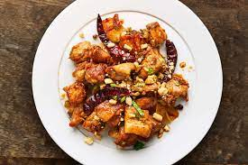

Kung Pao Chicken

Ingredients (4 servings)
- 1 pound boneless, skinless chicken breasts, cut into bite-sized cubes
- 2 tablespoons soy sauce
- 1 tablespoon rice vinegar
- 1 tablespoon hoisin sauce
- 1 tablespoon cornstarch
- 2 tablespoons vegetable oil
- 3 cloves garlic, minced
- 1 teaspoon fresh ginger, grated
- 1/2 cup unsalted dry roasted peanuts
- 2-3 dried red chili peppers, chopped (adjust to taste)
- 1 bell pepper, diced
- 1 zucchini, diced
- 2 green onions, sliced
- Sesame seeds, for garnish
- Cooked rice, for serving
Preparation
MARINATE THE CHICKEN
Step 1
- In a bowl, mix soy sauce, rice vinegar, hoisin sauce, and cornstarch to create the marinade.
Step 2
- Add the chicken cubes to the marinade, ensuring they are well-coated. Let it marinate for at least 30 minutes.
COOK KUNG PAO CHICKEN
Step 1
- Heat vegetable oil in a wok or large skillet over medium-high heat.
Step 2
- Add minced garlic and grated ginger to the hot oil, stir-frying for about 30 seconds.
Step 3
- Add marinated chicken to the wok, stirring frequently until the chicken is cooked through and slightly browned.
Step 4
- Push the chicken to the side of the wok. Add chopped dried red chili peppers and stir-fry briefly to release
their aroma.
Step 5
- Add diced bell pepper and zucchini to the wok, stir-frying until the vegetables are slightly tender but still
crisp.
Step 6
- Add unsalted dry roasted peanuts and sliced green onions to the wok. Toss everything together until well
combined.
Step 7
- Remove from heat and garnish with sesame seeds.
Step 8
- Serve the Kung Pao Chicken over cooked rice.